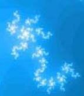

FractalSaver its a screensaver which displays an animated fractal. FractalSaver can also "play" the fractal music creating a strange abstract atmosphere. The visual and sound effects are created just using a simple mathematical formula and some mapping algorithms. FractalSaver is an open source project running on SourceForge.
|  |
WANTED! This fractal seahorse was found somewhere in the in the sea of complex numbers but we lost it. It's very hard to pick the same point twice (there is almost infinite number of possibilities) that's why he had became so precious to us that we even named him as our project logo and mascot. His location is wanted and if you find it please contact us and your name will enter in the Credits page as a brave fractal surfer. |